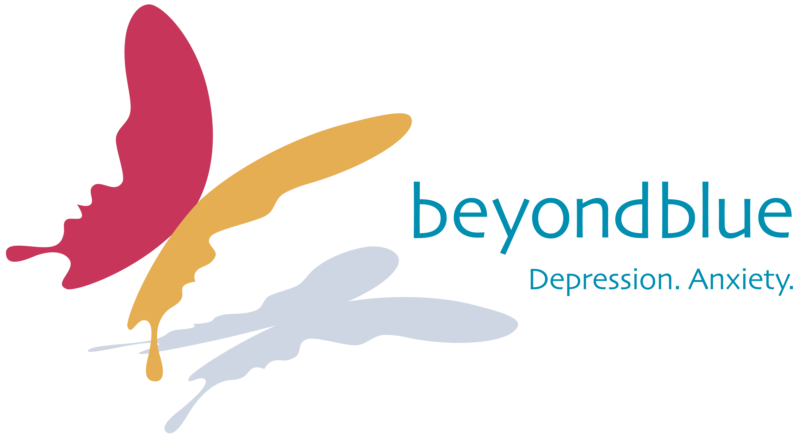
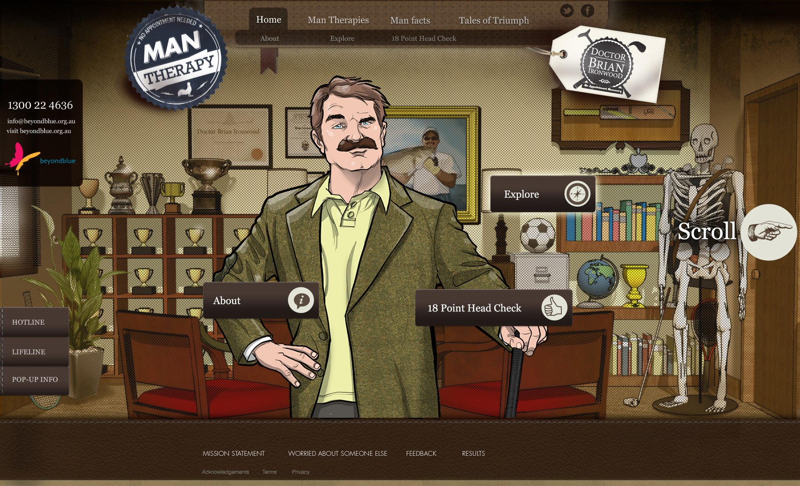
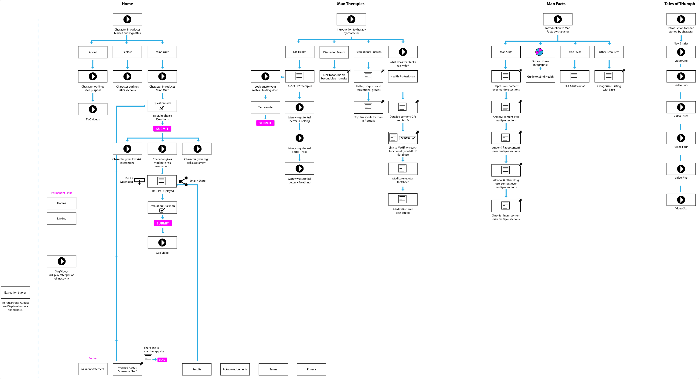
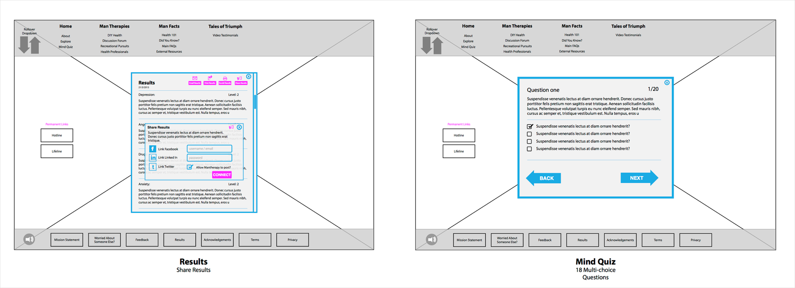
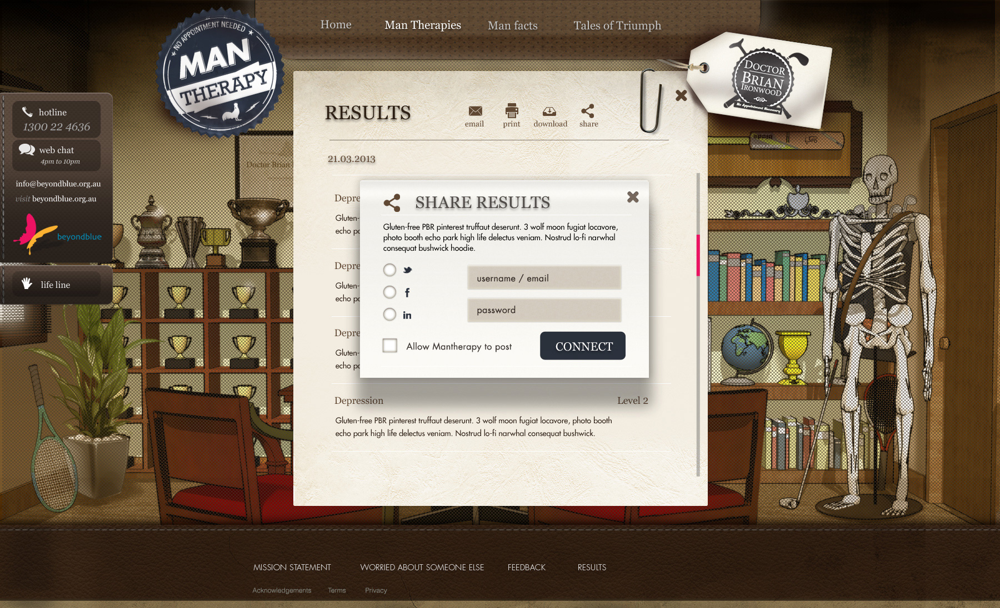
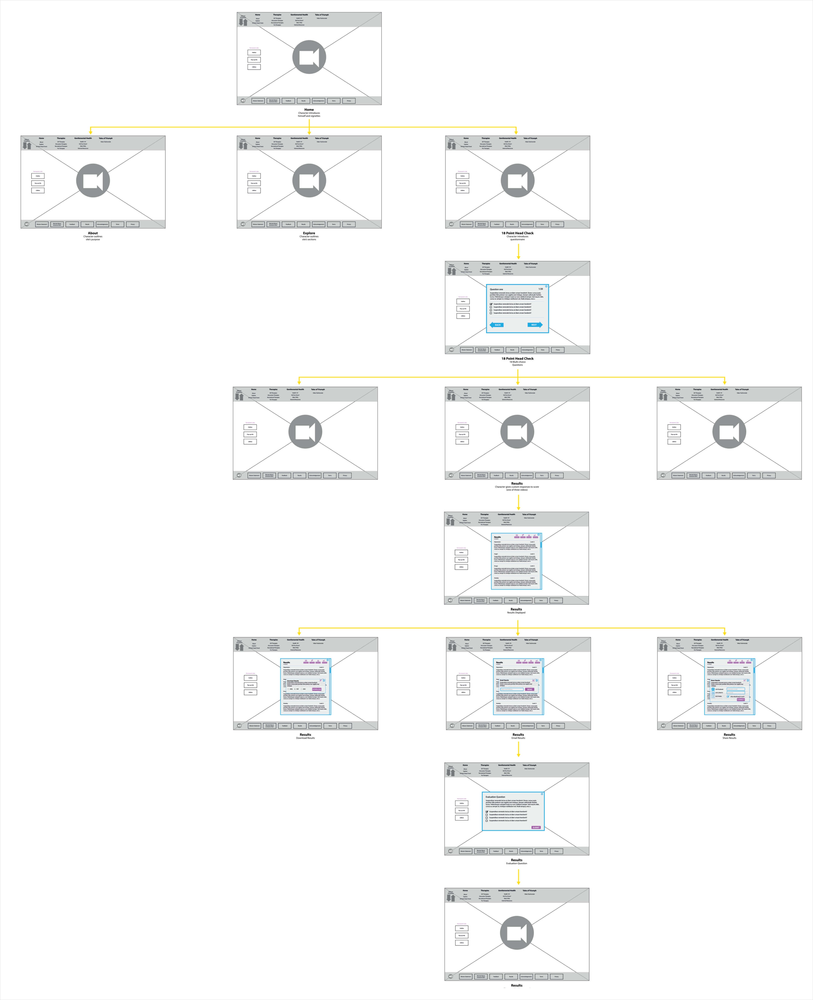
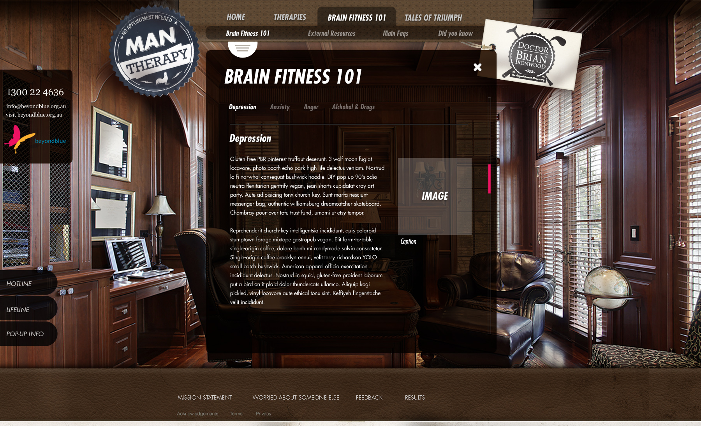
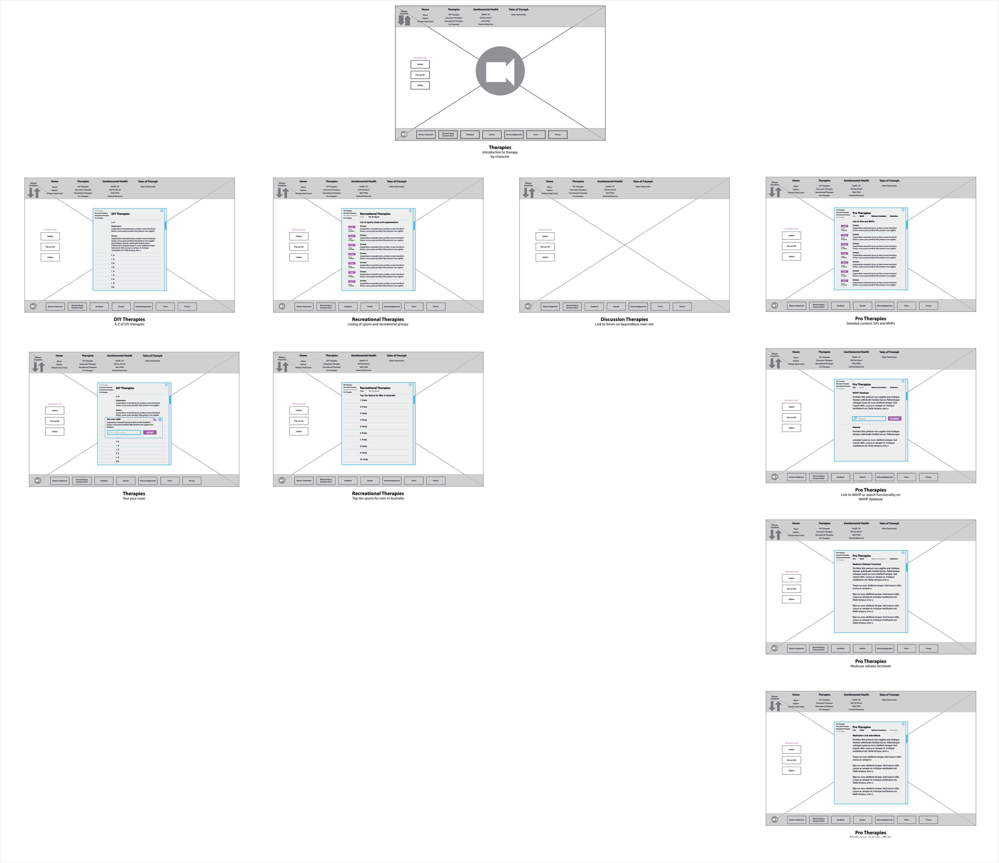
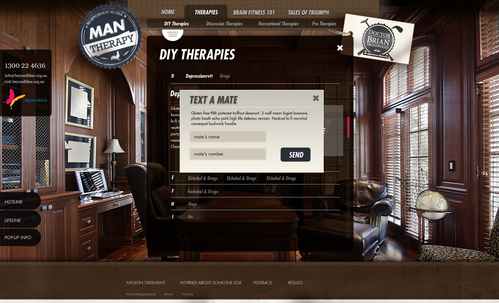

mantherapy.org.au
Landing page

High-level user journey

Wireframes for Mind Quiz

UI for Mind Quiz

Wireframes user journey for first-time visitor

UI for Brain Fitness

Wireframes for Brain Fitness

UI for share functionality
